Every other terminal assumes you already know the answer. This one is built for the moment before that.
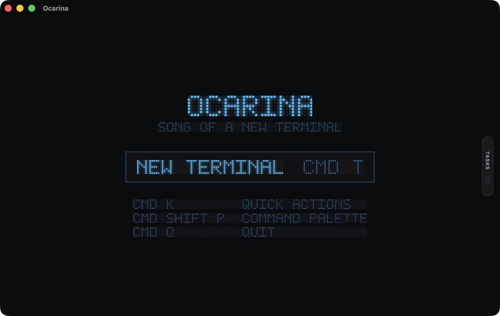
Finding a command used to mean leaving the terminal, reading docs, copying a line you cannot parse, and pasting it back.
Quick Actions carries those commands already. Claude Code, Gemini CLI, Codex, Homebrew, Node, Git.
Nothing here runs itself. Choosing types the command at your prompt and explains what it does. You press Return.
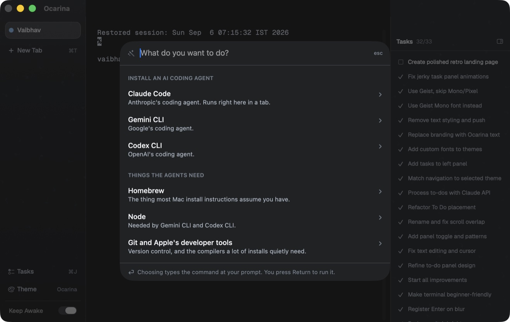
Give an agent five things across twenty minutes and you will not remember which of them it reached.
Ocarina reads the transcript your agent already writes and keeps the list. Claude names each line, so it reads like a to do list rather than a log.
It says finished, never done. The only signal available is that the agent stopped talking, and the wording should not claim more than that.
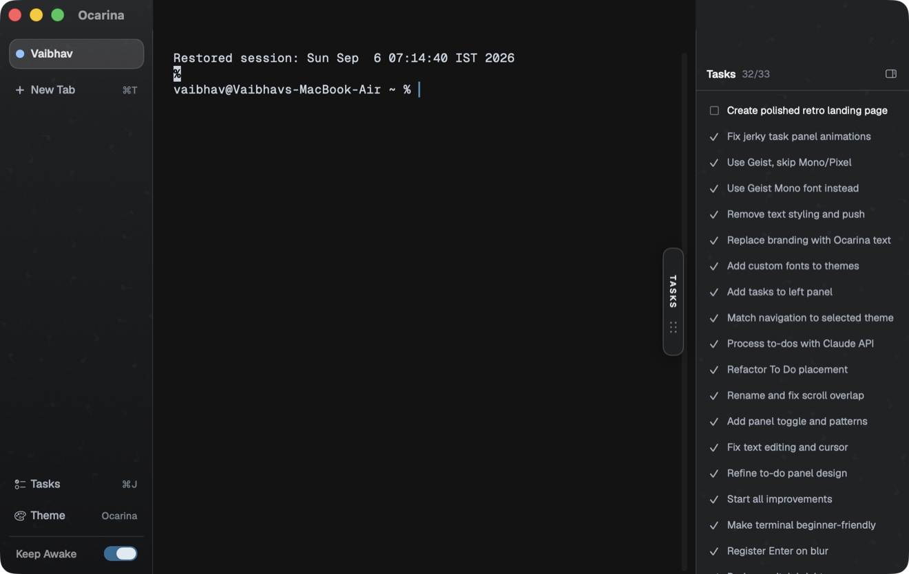
A failed command is where a new user stops. It is the one moment worth interrupting, and the only one where a single button turns a dead end into the next step.
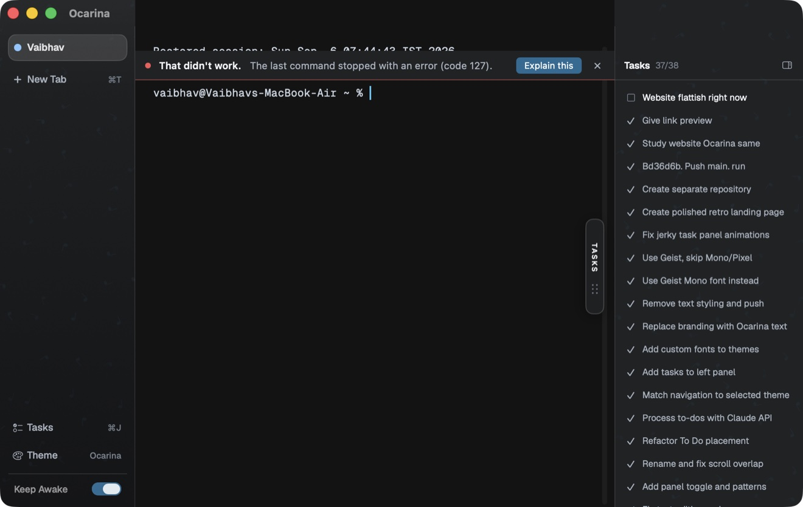
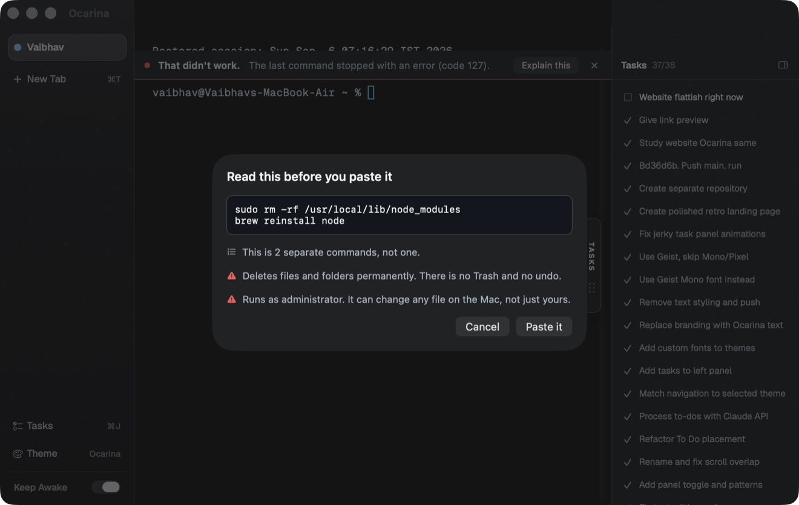
Colour, texture and type move together. Every theme is checked against a contrast floor before it is offered, because a palette that makes error text unreadable ends the session for the person who cannot yet read errors.
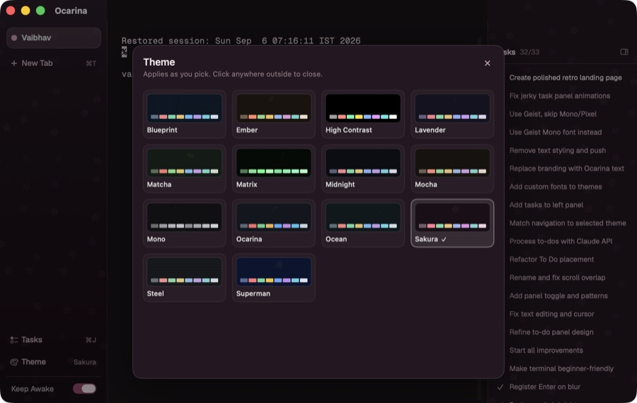
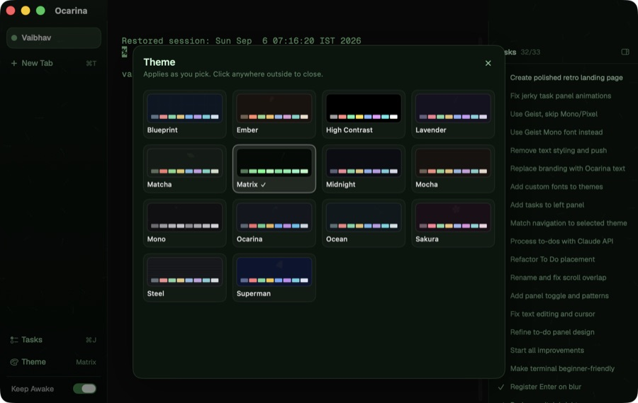
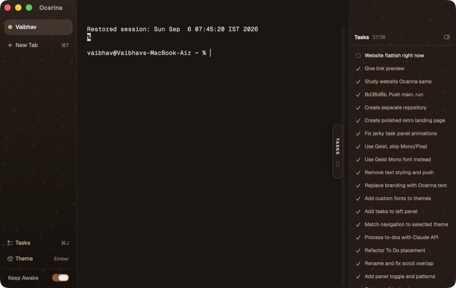
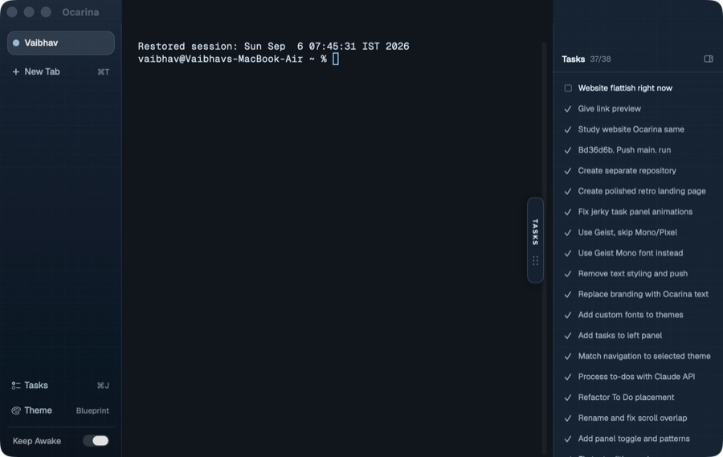
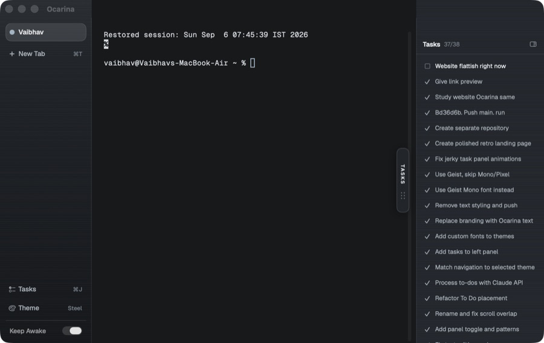
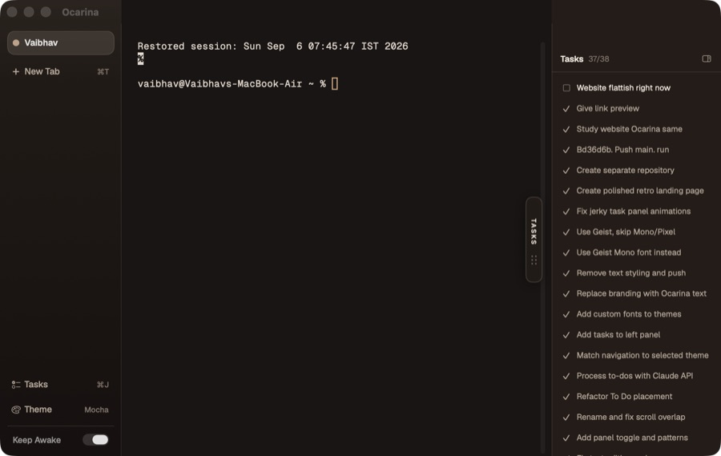
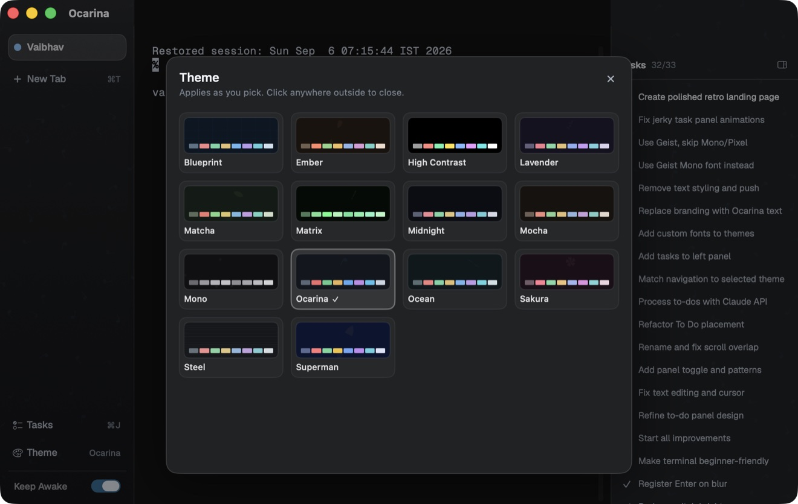
The same product decision, made about forty small things.
Assume the person reading cannot yet recover from a mistake, then design so they never have to.
Every path that puts a command in front of you types it and stops. The last act is yours.
All sixteen terminal colours in every theme are contrast checked. A theme that fails is listed as broken, not quietly shipped.
Finished, never done. A refused keep awake shows as refused. The interface does not claim more than the data supports.
Ordinary commands paste silently. Only multi command or destructive text stops for a sentence.
A dot per tab, driven by the shell itself, so a silent sleep still reads as busy and a failure reads as red.
No plugin system, no scripting layer, no profile format. One window you can describe in a sentence.
You describe what you want, an agent writes it, and the terminal is simply where that happens. You do not want to get good at the terminal. You want it to stop being the obstacle.
No technical background assumed. If you have never installed anything from a command line, the first thing you need is already in the drawer.
If you want tmux integration, split panes, a plugin ecosystem and a config language, this is the wrong terminal and it always will be. Those are good features. They are also the bulk that sent this user away.
Public on GitHub, written in Swift, and small enough to read in an afternoon.